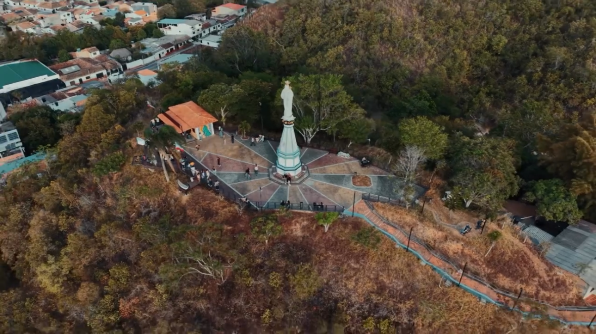
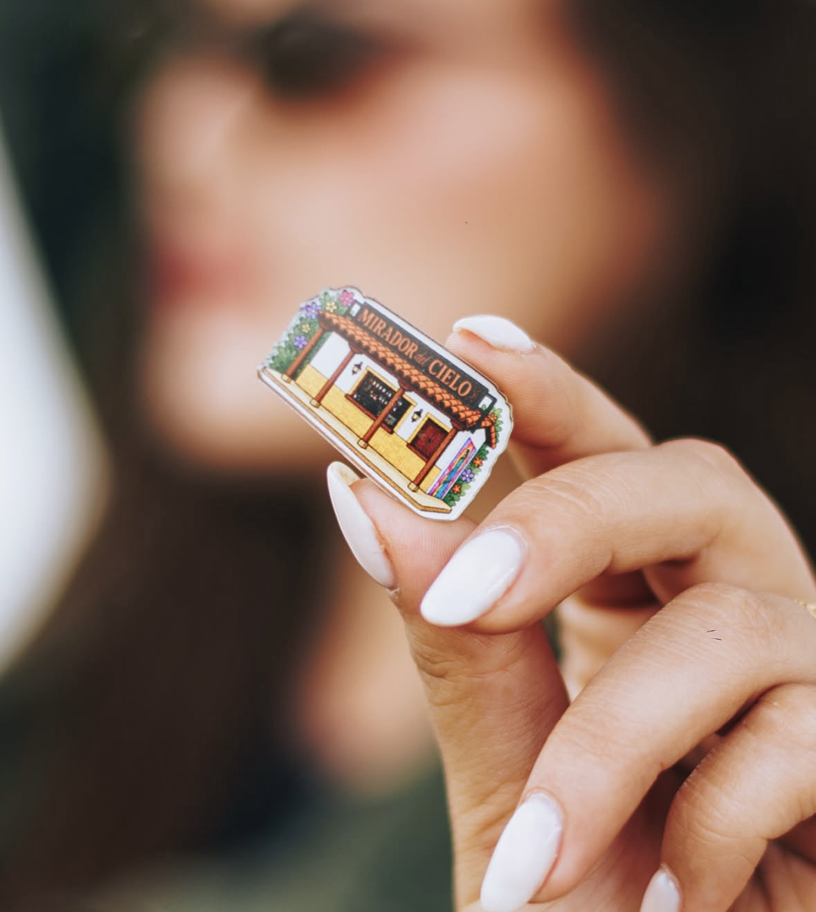
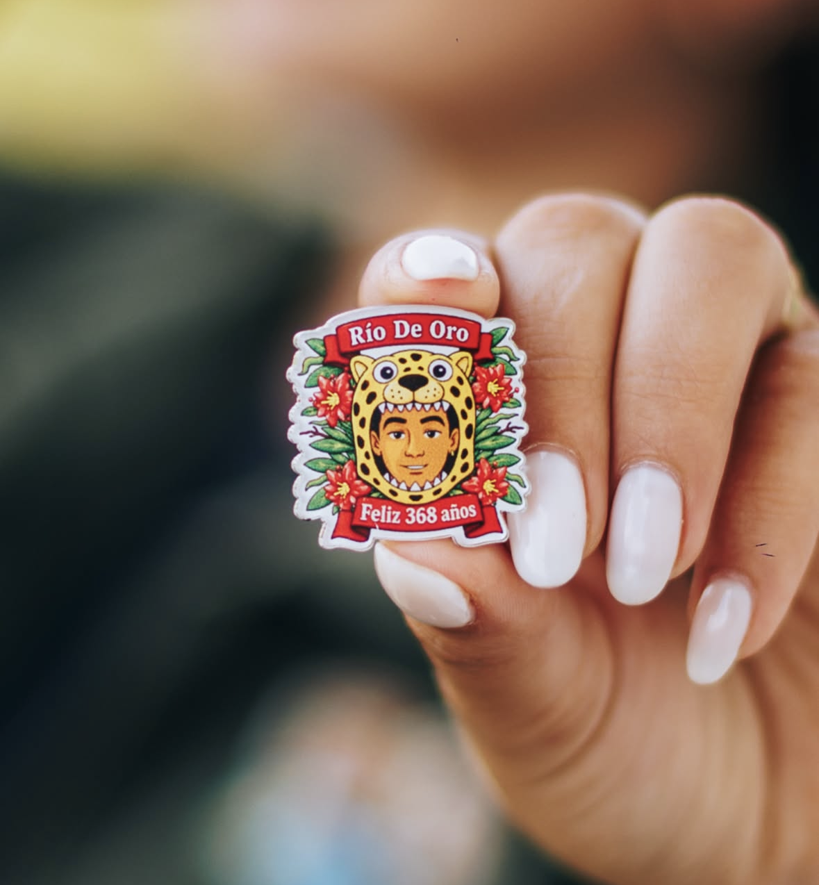

Los mejores atardeceres de Río de Oro acompañados de una experiencia de altura.
Explorar el MenúUbicado junto al icónico monumento en el cerro, nuestro mirador ofrece la vista panorámica más espectacular de Río de Oro.
Diseñamos este espacio para que disfrutes de la brisa fresca, compartas con amigos y te dejes cautivar por la magia de nuestros atardeceres. ¡La foto perfecta está garantizada!

Captura la magia de nuestros atardeceres y sabores


No te vayas sin tu pieza de colección. Celebra el arte y los 368 años de historia de Río de Oro con nuestros pines exclusivos de edición limitada.
Todo lo que necesitas saber antes de visitarnos
Etiquétanos en tus mejores fotos y videos con @miradordelcielordo para aparecer en nuestras historias.